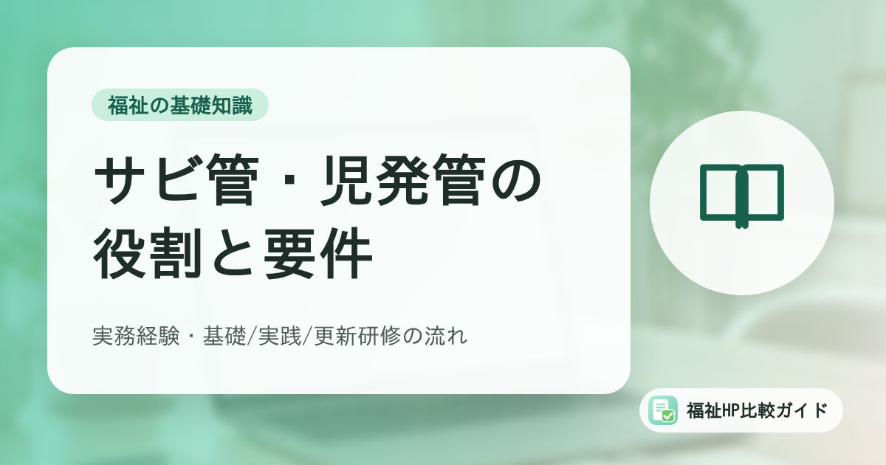

サービス管理責任者・児童発達支援管理責任者とは｜役割・実務経験の要件・研修の流れを整理

障害福祉サービスの事業所には「サービス管理責任者（サビ管）」、障害児通所支援などの事業所には「児童発達支援管理責任者（児発管）」の配置が求められています。求人でもよく見かける職種ですが、なるための要件は実務経験と複数の研修の組み合わせで、少し複雑です。この記事では、国の通知と自治体の案内をもとに、役割と要件、研修の流れを整理します。
この記事でわかること
- サビ管・児発管の役割と、2つの違い
- 実務経験の要件（5年・8年・3年の3つのルート）
- 基礎研修→OJT→実践研修→5年ごとの更新研修の流れと、OJTを6か月にできる特例
- サビ管・児発管が欠けたときの「みなし配置」と、事業所が日頃から備えたいこと
サビ管・児発管はどんな役割の人か
障害福祉サービスや障害児支援の事業所では、人員基準により「サービス管理責任者」または「児童発達支援管理責任者」（以下、あわせて「サビ管等」）を置くことが定められています。
厚生労働省の通知「サービス管理責任者研修事業の実施について」では、サビ管等の役割を次のように説明しています。
- 利用者一人ひとりの最初の状態の把握（アセスメント）、個別支援計画の作成、定期的な評価など、サービス提供のプロセス全体に責任を持つ
- 障害特性や生活実態についての専門的な知識と、個別支援計画を作成・評価する技術を持つ
- ほかの職員に対して指導的な役割を果たす
つまり、サビ管等は「支援の質を管理する人」です。利用者や家族、相談支援専門員にとっては、事業所の支援方針について話し合う中心的な窓口にもなります。
サビ管と児発管の違い
| 項目 | サービス管理責任者（サビ管） | 児童発達支援管理責任者（児発管） |
|---|---|---|
| 主な配置先 | 生活介護、就労移行支援、就労継続支援、共同生活援助（グループホーム）などの障害福祉サービス事業所 | 児童発達支援、放課後等デイサービスなどの障害児通所支援、障害児入所施設 |
| 根拠となる告示 | 厚生労働大臣が定めるもの | こども家庭庁長官が定めるもの |
| 研修 | 共通のカリキュラム（基礎・実践・更新） | 共通のカリキュラム（基礎・実践・更新） |
| 実務経験 | 障害福祉サービスの要件に沿った業務 | 児童分野を含む要件に沿った業務 |
研修のカリキュラムは共通化されていますが、千葉市の案内にもあるとおり、実務経験として認められる業務の範囲はサビ管と児発管で異なります。サビ管として働いてきた人が児発管になれるとは限らないため、注意が必要です。
なるための要件は「実務経験」と「研修修了」の両方
サビ管等になるには、次の2つの要件を両方満たす必要があります。
- 実務経験の要件
- 研修修了の要件（基礎研修・実践研修などの修了）
実務経験の要件（3つのルート）
千葉市の案内では、障害者の保健・医療・福祉・就労・教育の分野での直接支援・相談支援などの実務経験が、次のいずれかを満たすこととされています。
| ルート | 必要な期間 | 日数の目安 |
|---|---|---|
| 相談支援業務と直接支援業務 | 通算5年以上 | 900日以上 |
| 直接支援業務のみ | 通算8年以上 | 1,440日以上 |
| 国家資格による業務（※） | 通算3年以上 | 540日以上 |
日数は、国の事務連絡で「1年につき180日の勤務（時間は問わない）」とされていることから計算した目安です。※対象となる国家資格の種類や、あわせて必要な業務の条件は、告示と自治体の一覧表で確認してください。実務経験は、サビ管等に就任する時点で満たしていることが必要です。
対象となる業務は自治体の一覧表で確認を
どの職場・どの業務が「相談支援業務」「直接支援業務」にあたるかは細かく定められており、多くの自治体が実務経験の一覧表を公開しています。採用や配置の前に、所管の自治体の一覧表と、本人の実務経験証明書の内容を照らし合わせておきましょう。
研修の流れ：基礎→OJT→実践→5年ごとの更新
研修の体系は2019年度（令和元年度）から見直され、現在は次の3段階になっています。
| 段階 | 内容 | 受講のタイミング |
|---|---|---|
| 基礎研修 | 個別支援計画の作成などの基礎を学ぶ | 受講に必要な実務経験などの条件は、都道府県の募集案内で確認 |
| 実践研修 | サビ管等として必要な実践的な内容を学ぶ | 基礎研修修了後、原則2年以上の実務経験（OJT）を経てから |
| 更新研修 | 実践を振り返り、知識・技能を更新する | 実践研修修了後、5年度ごと |
あわせて、相談支援従事者初任者研修（講義部分）の修了も必要です。沖縄県の案内では、配置にはサビ管等研修（実践研修または更新研修）の修了に加え、相談支援従事者初任者研修（講義部分）の修了と実務経験が必要だと説明されています。
OJTを「6か月以上」にできる特例
基礎研修から実践研修までの実務経験（OJT）は原則2年以上ですが、2023年6月30日付の告示改正で、次の場合は例外的に6か月以上でよいとされました。
- 基礎研修の受講開始時点で、すでに実務経験の要件を満たしている
- 障害福祉サービスの個別支援計画の作成の一連の業務に従事している
- そのことを指定権者（都道府県・市）に届け出ている
届出の様式や方法は自治体ごとに異なります。東京都や千葉市は、届出の方法をウェブサイトで案内しています。
更新研修を受け忘れないために
更新研修は、実践研修の修了後、5年度ごとに受講が必要です。研修の修了証書には、次に更新研修を修了すべき期日が記載されます。
期限までに更新研修を修了できなかった場合は、サビ管等として従事できなくなります。国の事務連絡では、その場合でも実践研修を改めて修了すれば（実践研修を受けるための実務経験は不要、基礎研修の受け直しも不要）、修了日以後は再び従事できるとされています。とはいえ、その間は配置ができないため、期限の管理が大切です。
事業所で管理しておきたいこと
- サビ管等とその候補者の、基礎研修・実践研修・更新研修の修了日と、次の更新期限
- 相談支援従事者初任者研修（講義部分）の修了の有無
- 実務経験証明書（以前の職場で発行してもらうもの）の保管場所
- 都道府県の研修の募集時期（年に数回など、自治体によって異なる）
サビ管等が欠けたときの「みなし配置」
退職や病気など、事業所の責任ではない理由でサビ管等が急にいなくなることがあります。このような「やむを得ない事由」の場合、一定の要件のもとで、実務経験のある職員をサビ管等とみなして配置できる措置があります。
2023年6月30日付の事務連絡では、従来の措置（欠けた時から1年間）に加えて、次のすべてを満たす職員は、実践研修を修了するまでの間に限り、最長2年間サビ管等とみなして配置できるとされました。
- 実務経験の要件を満たしている
- サビ管等が欠けた時点で、すでに基礎研修を修了している
- サビ管等が欠ける前から、その事業所に配置されている
この措置を使えない場合、サビ管等の不在が続くと人員欠如減算の対象になることがあります。基礎研修を修了した職員を事業所内で育てておくことが、いざというときの備えになります。具体的な手続きは、指定権者に確認してください。
採用・情報発信で押さえたいこと
サビ管等は、多くの事業所で採用が難しい職種のひとつです。求人やホームページで情報を出すときは、次の点に気をつけると、応募者とのすれ違いを減らせます。
| 場面 | 押さえたいこと |
|---|---|
| 求人の応募条件 | 「実践研修修了済み」「基礎研修修了済みで実践研修の受講予定」など、どの段階の人を求めているかを明記する |
| 応募者の確認 | 研修の修了証書（更新期限）と、実務経験証明書を取得できるかを確認する |
| 育成の方針 | 基礎研修の受講支援や、OJTの体制があるかを伝えると、将来サビ管等を目指す人にも届きやすい |
| 事業所紹介 | サビ管等が個別支援計画の作成や見直しの中心になることを、利用者・家族向けにわかりやすく説明する |
採用ページの作り方は「福祉事業所の採用ページ設計」、サービスの種類ごとの違いは「障害福祉サービスの種類一覧」でも整理しています。児発管を置く放課後等デイサービス・児童発達支援については「放課後等デイサービスと児童発達支援の違い」も参考にしてください。
まとめ
サービス管理責任者・児童発達支援管理責任者は、個別支援計画を中心に、事業所の支援の質に責任を持つ職種です。なるには、5年・8年・3年のいずれかの実務経験と、基礎研修・実践研修（OJTを含む）、相談支援従事者初任者研修（講義部分）の修了が必要で、その後も5年度ごとの更新研修が欠かせません。
要件や届出の方法は、国の告示をもとに自治体ごとに運用されています。研修の修了日と更新期限を一覧で管理し、基礎研修を修了した職員を育てておくことが、サビ管等の不在による減算を防ぐ現実的な備えです。
よくある質問
サビ管と児発管は、同じ人が兼ねられますか？
研修のカリキュラムは共通化されていますが、実務経験として認められる業務の範囲はそれぞれ異なります。両方の要件を満たしていれば、どちらの立場でも従事できる可能性がありますが、同じ時間帯に複数の事業所で兼務できるかどうかは、サービスの種類や人員基準によって扱いが違います。配置を考える際は、事前に指定権者（都道府県・市）に確認してください。
更新研修を受け忘れたら、どうなりますか？
期限までに更新研修を修了できなかった場合、そのままではサービス管理責任者等として従事できなくなります。国の事務連絡では、実践研修を改めて修了すれば（実践研修受講のための実務経験は不要、基礎研修の受け直しも不要）、修了日以後は再び従事できるとされています。修了証書には次に更新研修を修了すべき期日が記載されるため、事業所で一覧にして管理しておくと安心です。
実務経験の「1年」は、何日働けば認められますか？
サービス管理責任者等として従事するための実務経験や、基礎研修・実践研修を受講するための実務経験は、1年につき180日以上の勤務（時間は問わない）が目安とされています。例えば5年の実務経験が必要な場合は、5年以上かつ900日以上の勤務が必要です。認められる業務の範囲は自治体の一覧表で確認しましょう。
参考資料・出典
- こども家庭庁・厚生労働省 事務連絡「サービス管理責任者等に関する告示の改正について」（令和5年6月30日、東京都福祉局掲載）
- 厚生労働省「サービス管理責任者研修事業の実施について」（東京都福祉局掲載）
- 東京都福祉局「サービス管理責任者研修」
- 千葉市「サービス管理責任者及び児童発達支援管理責任者について」
- 沖縄県「サービス管理責任者等研修」
制度・料金・統計は改定される場合があります。最新の内容は各出典の公式情報でご確認ください。